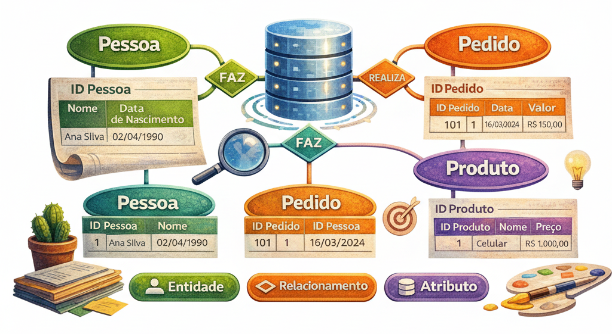

?? Vis�o Geral da Semana
Durante esta semana iniciaremos o estudo da Modelagem Conceitual de Banco de Dados. Esse � o primeiro passo no processo de constru��o de um banco de dados, pois permite representar de forma visual as entidades, atributos e relacionamentos de um sistema.
Para apoiar esse processo utilizaremos o software BRModelo, que permite criar diagramas do Modelo Entidade-Relacionamento (MER).

?? Instala��o do BRModelo
Segue um v�deo com as instru��es para download e instala��o do software.
?? Conte�do da Semana
?? O que � Modelagem de Dados?? N�veis de Modelagem (Conceitual, L�gico e F�sico)
?? Modelo Entidade-Relacionamento (MER)
?? Entidades
?? Atributos
?? Relacionamentos
?? Cardinalidade
?? Introdu��o ao BRModelo
?? Como estudar nesta semana
O objetivo desta semana � compreender os conceitos iniciais de Modelagem Conceitual e aprender a representar um sistema utilizando diagramas Entidade-Relacionamento.
Fa�a a leitura do material disponibilizado sobre Modelagem Conceitual, observando principalmente:
- ? O que � um Modelo Conceitual
- ? O que s�o entidades e atributos
- ? Como funcionam os relacionamentos
- ? O conceito de cardinalidade
Para realizar os exerc�cios de modelagem ser� necess�rio instalar o software BRModelo.
Assista ao v�deo de instala��o:
? Assistir v�deo de instala��o do BRModeloAp�s instalar o BRModelo, tente representar pequenos sistemas utilizando diagramas Entidade-Relacionamento.
A pr�tica � fundamental para compreender como identificar entidades, atributos e relacionamentos.
?? Materiais da semana
?? Links �teis
Link de instala��o de softwares:
?? Atividade da semana
Ap�s estudar os conceitos apresentados, fa�a os exerc�cos propostos.
Exerc�cio 1 Exerc�cio 2 Gabarito 1 Gabarito 2
?? Encerramento
Nesta semana voc� iniciou o estudo da Modelagem Conceitual, que � a etapa respons�vel por representar a estrutura de um sistema antes mesmo da cria��o das tabelas do banco de dados.
Com o uso do Modelo Entidade-Relacionamento e da ferramenta BRModelo, voc� come�ar� a desenvolver a habilidade de transformar problemas do mundo real em representa��es estruturadas.
- Voc� consegue identificar entidades em um sistema real?
- Consegue diferenciar entidade de atributo?
- Consegue imaginar o relacionamento entre duas entidades?